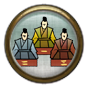

Leaderboards
The leaderboards record your rating across multiple different battle setups. Only battles fought against opponents using the match-made battle button on the conquest map will contribute towards your rankings on the leaderboards.
Shogun Ladder
Only avatars who have explored every region on the avatar conquest map and have achieved rank 10 can feature on the shogun ladder. The Shogun ladder tracks points based on your rankings across all of the leaderboards. The current leader of the Shogun ladder will receive the title 'Shogun' and have their avatar name displayed in the chat channel in gold coloured font. The Shogun will also unlock the 'There Can Be Only One' achievement and gain a unique armour reward.